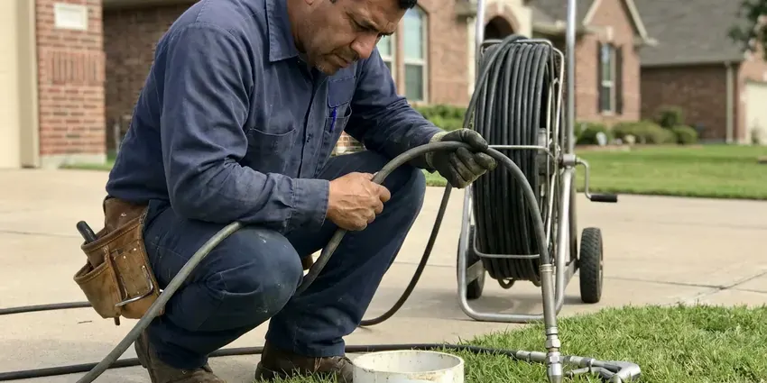

Plumbers Near Me in Florence, KY
For fast and professional plumbing services across Florence, KY, look no further than the skilled team at BFK Plumbing.
- Same-Day Plumbing Appointments
- Licensed and Insured Team
- Upfront Flat-Rate Pricing
- Upfront Pricing

Get a Trusted Local Plumber at Your Door Today in Florence, KY.
Call now and we will give you a clear arrival window and a price before any work begins.
Your Trusted Plumbers Near Me in Florence, KY are BFK Plumbing
BFK Plumbing is a full-service plumbing company with licensed plumbers working throughout the area. We repair leaks, clear drains, install water heaters, replace fixtures and handle gas and water line work, all with written pricing before work starts.
Our expertise includes:
- Leak detection and repair on copper, PEX and galvanized pipe
- Diagnose and repair all types of leaks.
- Water Heater Repair & Installation

Additional Plumbing Maintenance Services in Florence, KY
Our maintenance and specialty plumbing services in Florence, KY catch small problems before they become emergencies.


Customers
Why Choose BFK Plumbing for Plumbers Near Me in Florence, KY?
Private wells and cisterns still serve some rural homes, and iron, sulfur, and grit are frequent reasons for water treatment. Crawlspaces and basements are both common in Kentucky, and crawlspace homes make most plumbing repairs easier to reach. Our plumbers know these local conditions and fix problems in ways that last.
- Customer Satisfaction, Your peace of mind is our top priority, and we stand behind the quality of every plumbing service we provide.
- Licensed Pros, Every job is handled or supervised by a licensed Kentucky plumbing contractor.
- Rapid Response, For plumbing emergencies, our team is ready to respond fast to minimize damage and restore your peace of mind.
Citywide Coverage
Our plumbers work in every neighborhood of Florence, from established areas with original copper and galvanized pipe to newer communities plumbed with PEX. Wherever you live, a stocked truck is often nearby.
Experienced Team
The BFK Plumbing plumbing team is made up of dedicated professionals who take pride in their craft. They have deep knowledge of plumbing systems, allowing them to diagnose problems accurately and deliver effective, long-lasting solutions for our Florence customers.
Safety-First Approach
When you choose BFK Plumbing, you can rest assured that all work is performed with careful attention to safety and code compliance. Our plumbers are trained to identify and reduce potential hazards, protecting your property and family in Florence.
Trusted Certified Florence Plumbing Services Professionals
At BFK Plumbing, we take pride in providing licensed, certified plumbing services throughout Florence, KY. Backed by leading industry credentials, our experienced plumbers combine technical skill with genuine customer care. Whether it is repair, installation, or maintenance, we follow strict safety and quality standards to deliver long-lasting results you can trust.
Call Us Now PHCC Plumbing Contractor Recognition
PHCC Plumbing Contractor Recognition Better Business Bureau (BBB) Accreditation
Better Business Bureau (BBB) Accreditation Angi Certified Pro
Angi Certified Pro ISO 9001 Quality Management Certification
ISO 9001 Quality Management CertificationFull-Service Local Plumbing Services in Florence, KY
Emergency Plumbing in Florence
Plumbing emergencies don't wait for business hours. Whether it's a burst pipe, a major sewer backup, or a sudden water heater failure, our emergency plumbers in Florence are available to provide rapid response and effective solutions. We understand the urgency of these situations and arrive equipped to diagnose and mitigate the problem quickly, minimizing damage and restoring peace of mind to your home or business.

Drain Cleaning and Sewer Service in Florence, KY
Clogged sinks, tubs and toilets are among the most common calls we take. We clear drains with cables and jetters sized to the pipe, then test for full flow. For repeat or whole-house backups, we inspect the main sewer line with a camera. We explain what caused the clog and how to prevent it.
Emergency Plumbing Repairs in Florence, KY
Burst pipes, overflowing toilets and gas smells cannot wait until Monday. Our emergency plumbers respond quickly, shut off water or gas and make the repair or a safe temporary fix. We carry common parts to finish most emergency jobs in one trip. After-hours pricing is quoted in advance.
Fixture Installation & Repair in Florence
From upgrading old fixtures to repairing broken ones, our plumbers provide professional installation and repair services for all your plumbing fixtures. This includes faucets, sinks, toilets, showers, bathtubs, and garbage disposals. We work with all major brands, making sure of proper installation and function. Whether you're remodeling a bathroom or simply need a leaky toilet fixed, we make sure your new or repaired fixtures work well and efficiently in your Florence home.
Water Heater Services in Florence
Reliable hot water is essential, and our plumbers specialize in both tank and tankless water heater services. We handle everything from routine maintenance and minor repairs, such as anode rod replacement or flushing sediment buildup, to complete new installations. Whether you're upgrading to a more energy-efficient tankless model or replacing an aging conventional unit, we make sure of proper sizing and installation according to Florence's plumbing codes, for consistent hot water for your household.
Pipe Repair & Repiping in Florence
Aging pipes, especially galvanized or polybutylene, can lead to frequent leaks and low water pressure. We offer complete pipe repair services, from patching small leaks to full-scale repiping with durable PEX or copper. Our goal is to provide long-lasting plumbing that stands up to Florence's water conditions.
Leak Detection & Repair in Florence
Even small leaks can cause serious damage over time, especially where humidity can speed mold growth. Our plumbers use advanced diagnostic tools like acoustic leak detectors and thermal imaging to locate hidden leaks in walls, floors, and underground pipes. We then provide precise, non-invasive repairs for everything from dripping faucets and toilet leaks to slab leaks and burst pipes, preventing further water waste and structural damage in your Florence home.

Water Softener and Filtration Service in Florence
Private wells and cisterns still serve some rural homes, and iron, sulfur, and sediment are frequent reasons for water treatment. Hard water leaves scale on fixtures, inside water heaters and in pipes. We install and service water softeners, reverse osmosis drinking water systems and whole-house filters. Proper installation includes a bypass valve, drain connection and correct salt settings. Treated water helps your plumbing and appliances last longer.
Plumbers Near Me in Florence, KY
When you search for 'plumbers near me' in Florence, you want a company that's truly local and responsive. BFK Plumbing is familiar with the plumbing infrastructure and issues that affect homes and businesses throughout Florence, KY. We're not just a service provider, we're your neighbors too.
Local plumbers also understand the permit process, inspection requirements and water conditions in your community. We keep the parts that local homes need most on our trucks. That helps us finish the job in a single visit.
BFK Plumbing at a Glance
- Licensed and insured plumbers serving Florence, KY
- Same-day appointments and 24/7 emergency response
- Clear written estimates, no hidden fees
- 4.8-star rated by 309+ Kentucky customers
Florence Map
Florence Information
- Population
- 32,917
- Area codes
- Local
- Service area
- Florence and communities within 40 miles
- Nearby
- Independence, Covington, Georgetown, Frankfort
Summer humidity often causes sweating cold-water pipes and damp crawlspaces, which can encourage mold and wood rot. Water quality and slab foundations can also put real strain on plumbing in Florence, KY, so having a reliable local plumber on call protects your home.
Expert Services
Trust our professionals for reliable BFK Plumbing solutions in Florence, KY.
Our Specialized Plumbing Services in Florence, KY
At BFK Plumbing, we provide a complete range of plumbing services across Florence, KY. From leak detection to full system installations, our team ensures fast, precise, and affordable service for both residential and commercial properties. Explore our core services below:


How Our Local Plumbing Service Process Works in Florence, KY
Our process is designed for clarity and speed, so you get the plumbing help you need without hassle.
Request a Quote
Call (502) 300-9896 and describe the plumbing problem you are having. We schedule a licensed plumber and give you a clear arrival window.
Diagnose and Price
Your plumber inspects the issue and explains the options. You receive a written price before any work begins.
Repair and Review
We complete the repair, test everything and clean up. Then we review the work with you and answer any questions.
Frequently Asked Questions About Plumbers Near Me in Florence
The cost of plumbing services in Florence, KY can vary widely depending on the type and complexity of the job. Minor repairs like fixing a leaky faucet might range from $150 to $300, while more extensive work such as water heater replacement or sewer line repair could be anywhere from $800 to several thousand dollars. We always provide a clear, upfront estimate after diagnosing the issue.
Crawlspaces and basements are both common in Kentucky, and crawlspace homes keep most plumbing repairs easier to reach. Private wells and cisterns still serve some rural homes, and iron, sulfur, and sediment are frequent reasons for water treatment. Older homes in Florence may also experience issues with aging galvanized pipes or tree root intrusion in sewer lines.
Water heater replacements, gas line work, repipes and new fixtures in additions often require a permit. Minor repairs usually do not. We handle permits when they are needed.
Private wells and cisterns still serve some rural homes, and iron, sulfur, and grit are frequent reasons for water treatment. Hard water leaves mineral scale on faucets, showerheads and inside water heaters and pipes. Over time this reduces flow and shortens the life of fixtures and appliances. A water softener can help preserve your plumbing.
Yes, BFK Plumbing stands behind the quality of our work. We offer full warranties on both parts and labor for our plumbing services in Florence, KY. Specific warranty details will be provided with your service agreement, for your peace of mind.
Signs of a water leak include unusually high water bills, damp spots on walls or floors, unexplained puddles, the sound of running water when no fixtures are in use, or a musty odor. You can also check your water meter for movement when all water sources are off. If you suspect a leak, it's best to call a professional plumber to avoid further damage.
For many significant plumbing projects in Florence, such as water heater installation, main line repairs, or major repiping, a permit is required by local code. This confirms the work meets safety and quality standards. BFK Plumbing will handle all necessary permit applications and inspections for your project.
Signs of a slab leak in your Florence home include unexplained high water bills, warm spots on your floor, the sound of running water when all fixtures are off, visible cracks in the foundation, or mildew odors. If you suspect a slab leak, it's crucial to call a professional for immediate detection and repair to prevent structural damage.
What People Are Saying About Our Plumbing Experts?

Robert G.
The trenchless sewer replacement saved our front yard. They walked us through the camera inspection footage first so we knew exactly what we were paying for.
Sewer Line Replacement · Georgetown, KY
Laura S.
I scheduled a water heater replacement, and the team made the process smooth and affordable. The new unit works perfectly, and they cleaned up after completing the job.
Water Heater Replacement · Covington, KY
Patricia H.
We had a slab leak that two other companies could not find. BFK Plumbing located it in under an hour, explained our options, and the price matched the quote to the dollar.
Slab Leak Repair · Florence, KY
Emily R.
I called BFK Plumbing for plumbing repair, and the technician was fast, polite, and thorough. They explained the problem clearly and fixed it the same day. I will definitely hire them again. Highly recommended!
Plumbing Repair · Florence, KY
Daniel K.
A pipe burst at 11 pm and they actually answered. The plumber showed up within the hour, shut everything down, and had us back to normal the next morning. Could not ask for more.
Emergency Plumbing · Jeffersontown, KY
Mark T.
When our office needed drain cleaning, BFK Plumbing provided quick, reliable service. The plumber arrived on time and made sure every drain flowed perfectly before leaving. Very satisfied.
Drain Cleaning · Frankfort, KY